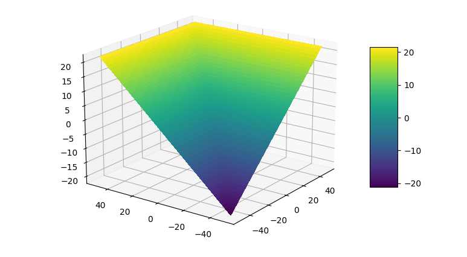

函数光滑近似（1）：maximum函数
函数的可微性在深度学习中很重要，因为在优化阶段，涉及到梯度的计算。但是深度学习中很多操作，如 max、argmax 等，无法求解梯度。为此，寻找这类操作的光滑近或次梯度似能够很好地解决梯度求解问题。当然这里并不是谈及深度学习中梯度计算的问题，而是探索常用函数如max、argmax、abs的光滑近似。预计会写一个系列，这里首先来谈谈max函数的光滑近似。
背景
在深度学习中，如果一个操作用$f$表示，可能还会涉及到可学习的参数$\boldsymbol{A}$，那么在神经网络模型训练阶段涉及到该操作（可以理解成是函数）的梯度计算
$\boldsymbol{A}$ 为操作 $f$ 有关的可学习的参数。有些情况下该操作并非光滑，不能直接计算梯度。这里举个例子：CNN 中的 Pooling 操作，不涉及可学习的参数。而 maxout 操作则涉及可学习的参数。
为了获得近似的梯度，让神经网络可训练下去，一种方法是寻求次梯度，可参看谈谈神经网络中的激活函数，另外一种方法是构造该操作的光滑近似。本系列就是围绕光滑近似问题展开，对不可导的函数（操作）进行光滑近似（函数光滑逼近）。
RELU激活函数在$x=0$处不可导，那么是不是对于深度学习模型来说就无法进行误差逆向传播优化？事实上，在工程上，有一种叫做次梯度的解决方案。我们都知道，绝对值函数$f(x) = |x|$在 $x=0$ 不可微，但是对称可导（Symmetric derivative）
在深度学习中，可以使用此方法作为不可导点的梯度计算。
就以RELU函数为例，当$x \gt 0$时，梯度为1，当$x \lt 0$时梯度为0。而0这个位置不存在梯度，而次梯度即选择$[0, 1]$区间中的任意值。在实现时，一般会选择一个区间内的固定值。
不过我们还是回到光滑近似这个思路上。
构造max的光滑近似
注意到 max 函数是一个凸函数，即
我们也可以从其函数图像中直观感受其凸性。同时，max具有这样的性质，
最容易让人想到是如下的构造，
只需要高中的数学知识即可。但是绝对值本身还是不够光滑，在原点不可导。比较曲折的思路是在这个基础上解决abs函数的光滑性近似问题，另外还要考虑从二元到多元的推广。不过这里暂不从这个思路展开。从平方开发的角度看，有如下简单的近似，
这个近似是基于$|x-y| = \sqrt{(x-y)^2}$，相当简洁。
根据 max 函数的定义，假设有数据$x_1, \dots, x_n$，其中$x_j$最大，不难有
于是有
添加一个参数 $\alpha \gt 0$ 做缩放因子，有
所以有
取$n=2,\alpha=2$我们有特例，
通过squeeze theorem有，
于是，我们可以拿该近似进行神经网络训练。因此，当$\alpha$为较大的参数时，有近似，
上式左边部分函数当$\alpha=1$时，有一个特别顾名思义的名称，称为为 logsumexp。有趣的是，max的近似logsumexp的梯度梯度就是 softmax 函数，
也就是说，max 函数的上述光滑近似的梯度是 softmax 函数。我们容易误以为softmax是max的soft化，其实这是误解，正确答案是softmax是onehot(argmax)的soft化，下一篇会写到。
类似的思路
按照上述类似的思路，假设$k \gt 0$有
其中 $k \neq 0$，于是有
中间部分如果加上模不就是 $L_{p}$ 范数吗？没错，我们后期讨论。当 $k \rightarrow \infty$ 时，$n^{\frac{1}{k}}=1$，因此，
对于上述的二维情况，如下，
我们把 $e^{x_{i}}$ 替换层 $x_{i}$ 上式依然成立，
利用上述思路，还可以构造更多光滑逼近。
依据上述两个类似的思路，我们也有一些有趣的结论。易知，
易知$\max - \min$的关系，
对上述不等式左右两边分别取倒数，改变符号，
也就是说$|x_1|,…,|x_n|$的最小值大于其调和平均。
logsumexp凸优化角度
从凸优化的角度，考虑到logsumexp的凸性，因此有
另一方面，假设有数据$x_1, \dots, x_n$，其中$x_j$最大，有
因此有，
这结果也就是形式一。
基于argmax（补充）
在本系列的第二篇函数光滑近似（2）：softmax与argmax我们知道，
即带参数的softmax形式。基于这个结论我们也获得max的另外一种光滑近似，
有三个关键点：
- 如果$\alpha = 0$，则上式右侧为均值
- 如果$\alpha = +\infty$，则上式右侧为$\max(\boldsymbol{x})$
- 如果$\alpha = -\infty$，则上式右侧为$\min(\boldsymbol{x})$
取$x_1 = 0, x_2 = x, \alpha=1$有特例一，
取$x_1 = -x, x_2 = x$，有特例二，
三种近似形式
通过以上推导，我们活动两种关于$\max(x_{1},\dots,x_{n})$的近似形式。
形式一，
形式二，
形式三，
由于
$\min$的光滑近似可以由$\max$导出。
特例与可视化
上述形式一取$n=2$的特例，即二维情况
使用matplotlib绘图制作，

对于形式一，取$\alpha=1$， $n=2$，$x_1 = 0, x_2 = x$，则relu函数有，
可以看到，softplus 不就是 relu 的光滑近似吗？也就是说softplus是relu关于max的光滑近似。类似地，Hinge loss也带有max函数，可以使用max的光滑近似获得该loss的光滑表示。
$L_0、L_1、L_2、L_\infty$ 中的应用
以上推导我们得到这样的结果，
事实上，在推导过程中稍加处理即可把右式变成范数形式，即
因此，有，
这里建立了Lp范数与max的关系。因此，$L_\infty$取$|x_{1}|,|x_{2}|,\dots,|x_{n}|$中最大值，在距离度量中对应Chebyshev距离；$L_0$取非零个数。
总结
本文使用简单的思路导出max函数的光滑近似的两种形式，并讨论着两种形式的一些应用。
参考
[1] https://en.wikipedia.org/wiki/Heaviside_step_function
[2] https://www.elen.ucl.ac.be/Proceedings/esann/esannpdf/es2014-153.pdf
[3] squeeze theorem
转载请包括本文地址：https://allenwind.github.io/blog/9831
更多文章请参考：https://allenwind.github.io/blog/archives/